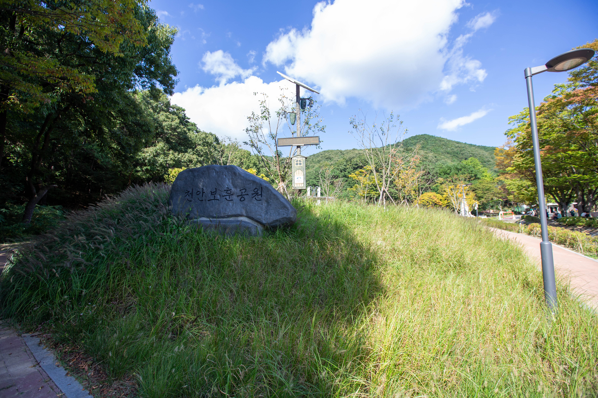
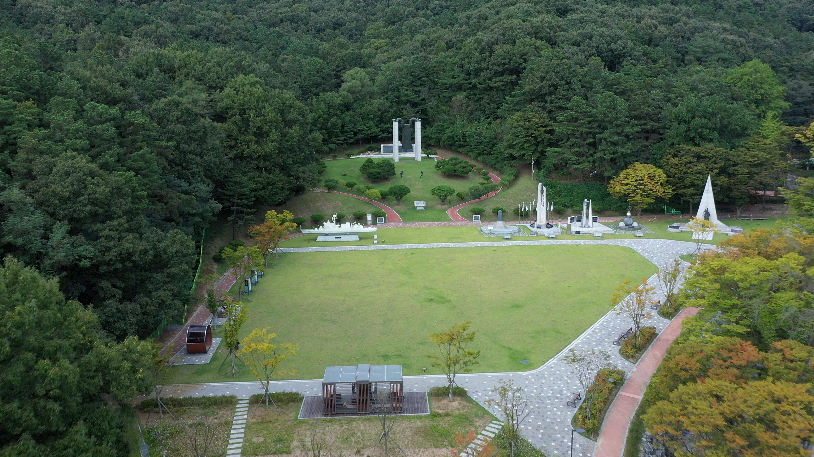

보훈공원
호국보훈의 의미를 담은 공간

보훈공원 이야기
보훈공원이 담고 있는 의미를 알아보세요.
🇰🇷 기억하고 기리는 공간
나라를 위해 헌신한 분들을 기억하고 추모하는 공간입니다.
🏛️ 천안의 호국 인물을 만나는 공간
천안과 관련된 호국 인물의 뜻을 되새겨볼 수 있습니다.
🌳 시민과 함께하는 공간
추모와 기념뿐 아니라 시민들이 산책하고 휴식할 수 있는 공간으로 이용됩니다.
주요 시설
보훈공원에서 만나볼 수 있는 주요 시설입니다.
🏛️ 천안인의 상
천안의 호국보훈을 상징하는 주요 기념시설입니다.
⚓ 천안함 관련 시설
천안함 희생 장병들을 기억하고 추모할 수 있는 공간입니다.
보훈공원 둘러보기
보훈공원의 모습을 확인해보세요.
